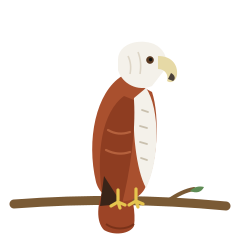
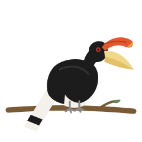
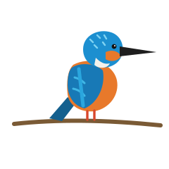
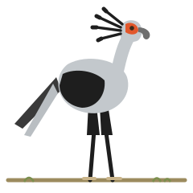
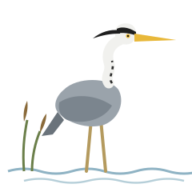
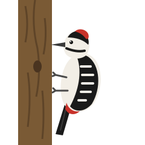

Original illustrations, one per lane. Each bird perches where it works; the Grey Heron wades, the Woodpecker clings to the trunk.
PLATE I · COORDINATORClawBlack Eagle Ictinaetus malaiensisProfile →

PLATE II · RESEARCHERScoutBrahminy Kite Haliastur indusProfile →PLATE III · ARCHITECT · NESTINGWeaverBaya Weaver Ploceus philippinusProfile →

PLATE IV · BUILDERForgeRhinoceros Hornbill Buceros rhinocerosProfile →

PLATE V · DEBUGGERTracerCommon Kingfisher Alcedo atthisProfile →

PLATE VI · SECURITYSentinelSecretary Bird Sagittarius serpentariusProfile →

PLATE VII · VERIFIERAuditorGrey Heron Ardea cinereaProfile →

PLATE VIII · SYSTEM OPSWardenWoodpecker PicidaeProfile →PLATE IX · WORKSPACEKeeperBarn Owl Tyto albaProfile →PLATE X · DOCS · NESTINGScribeHill Myna Gracula religiosaProfile →